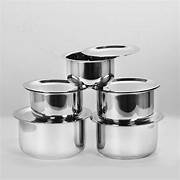

VESSEL
Welcome to the Vessel Page

Vessels are containers used for cooking, serving, or storing food and liquids.
They are made from various materials like steel, copper, glass, or clay.
Common types of vessels include pots, pans, bowls, and jars.
Vessels come in different sizes and designs to suit specific needs.
Explore the world of vessels and their uses!